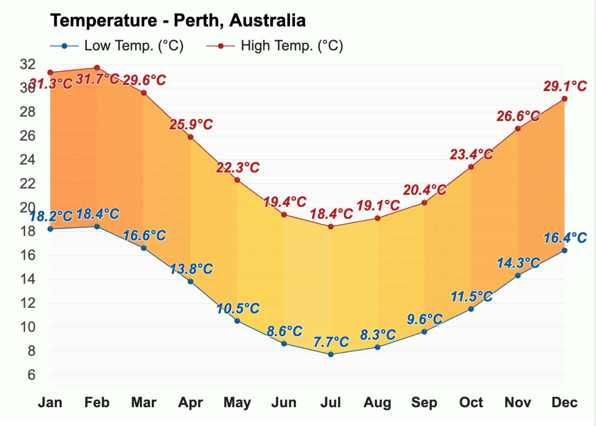
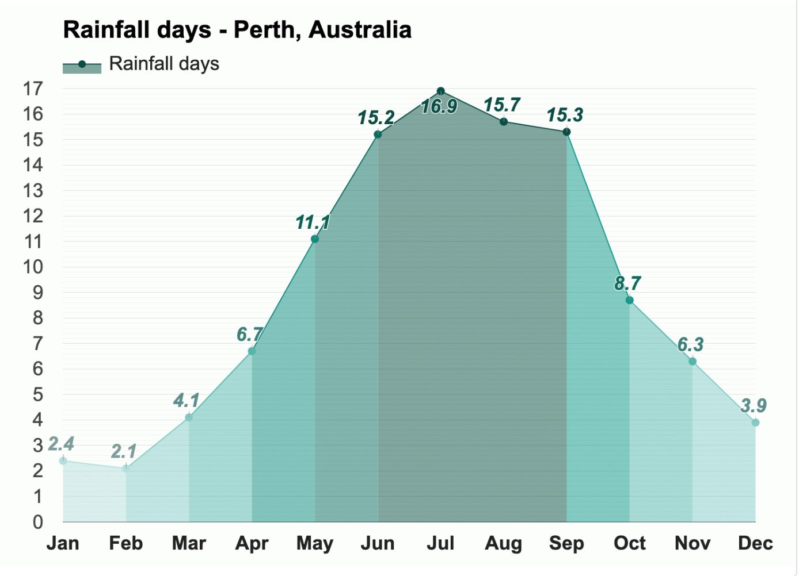

Temperature 
February is the warmest month, with an average high-temperature of 31.7°C (89.1°F) and an average low-temperature of 18.4°C (65.1°F).
With an average high-temperature of 18.4°C (65.1°F) and an average low-temperature of 7.7°C (45.9°F), July is the coldest month in Perth.

The months with the most sunshine in Perth, Australia, are January and December, with an average of 11.5h of sunshine. The month with the least sunshine in Perth, Australia, is June, with an average of 5.9h of sunshine.
Rain
In Perth, during the entire year, the rain falls for 108.4 days and collects up to 725mm (28.54") of precipitation.

The month with the most rainfall in Perth, Australia, is July, when the rain falls for 16.9 days and typically aggregates up to 145mm (5.71") of precipitation. July is the most humid month, with an average relative humidity of 57%.
February is the least humid month in Perth, Australia, with an average relative humidity of 38%. The month with the least rainfall is February, when the rain falls for 2.1 days and typically collects 9mm (0.35") of precipitation.
* The above information is sourced from Weather-At. Take a visit for more information...
Population 2,093,000 (Metro)
Median Age 32
Ancestry
The most common ancestries in Perth (WA) were English 18.8%, Australian 11.7%, Chinese 9.1%, Irish 6.5% and Scottish 5.1%.
Country of birth
In Perth (WA), 34.7% of people were born in Australia. The most common countries of birth were England 5.4%, China (excludes SARs and Taiwan) 4.0%, India 2.6%, New Zealand 2.5% and Malaysia 2.3%.
Religion
In Perth (WA), No Religion, so described was the largest religious group reported overall (46.5%).
The most common responses for religion in Perth (WA) were No Religion, so described 38.0%, Not stated 18.2%, Catholic 16.7%, Anglican 5.4% and Buddhism 4.7%.
* The above information is sourced from Australian Bureau of Statitics. Take a visit for more information...
Skate and BMX
Over the last 20 years there has been a significant growth in the interest and participation of action sports such as skateboarding and BMX.
Albury Skate Park
Thurgoona Skate Park
Springdale Heights Pump Track
Boat ramps
There are five boat ramps in the Albury region, with access to either the Murray River or Lake Hume. All ramps offer easy access to the water as well as nearby services.
Lake Hume Village Boat Ramp
Kremur Street
Mungabareena Reserve
Walking and cycling trails
Albury has more than 50 kilometres of interlinked on and off-road trails, offering walkers and cyclists of all ages, safe and enjoyable access to our natural environment and places of interest.
Heritage Walk
Nail Can Hill / Ridge Trail
Bungambrawatha Creek Trail
Rainforest Walk
* The above information is sourced from Albury City Government. Take a visit for more information...